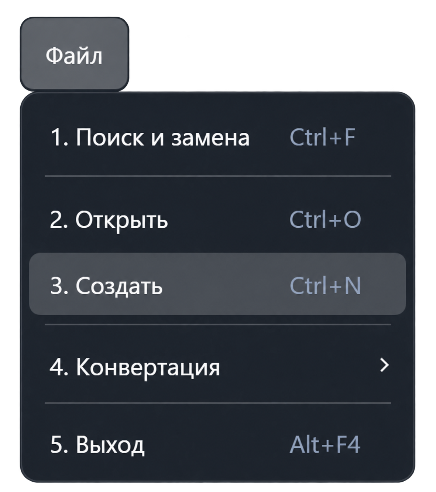

Функция «Создать»
Команда создаёт пустой текстовый документ в рабочем пространстве приложения. В нём можно подготовить новую программу контроля. Выберите «Файл → Создать» или нажмите Ctrl + N.

Что происходит после вызова
Приложение открывает новую вкладку текстового редактора с пустым содержимым. Окно выбора файла при создании не появляется.
Новому документу назначается временное имя «Новый». Если это имя уже занято в рабочем пространстве, добавляется номер: «Новый1», «Новый2» и далее. При повторном вызове команды создаётся отдельный документ.
Новый документ ещё не связан с файлом на диске. Чтобы выбрать имя и папку для сохранения, используйте «Файл → Сохранить как».
Как подготовить новый документ
- Вызовите команду «Создать».
- Введите текст в открывшемся редакторе. Команда не вставляет готовый шаблон программы контроля.
- Сохраните документ под нужным именем.
- Если документ содержит программу контроля, выполните трансляцию и проверьте сообщения перед запуском через меню «Выполнение».
Ограничения
Если приложение сообщает о текущей работе с аппаратурой, создание документа блокируется. Завершите выполнение и повторите команду.
Создание документа не выполняет трансляцию и не запускает проверку изделия. Эти действия вызываются отдельно.